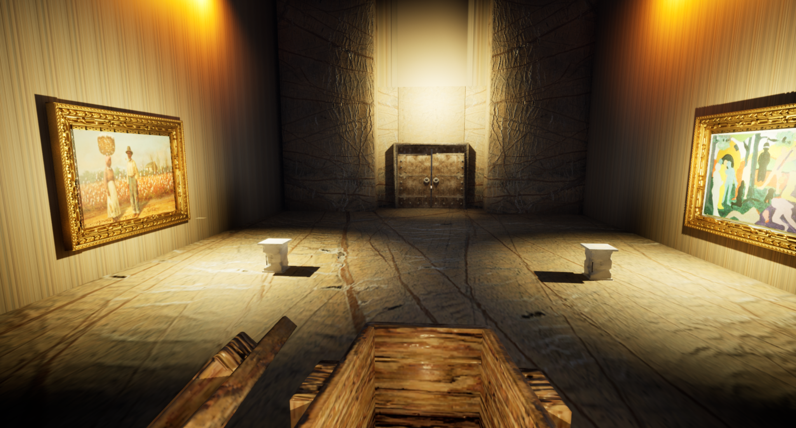

🎮 Jeu Humanity sous Unreal Engine
🧩 Escape Game développé avec Unreal Engine, Humanity est un projet interactif immersif conçu en équipe.
interactif développé avec Unreal Engine en première année de BUT Informatique Graphique, par une équipe de six personnes.
Le jeu est conçu comme une progression vers la liberté, avec différents niveaux inspirés de l'histoire : l'esclavage, la ségrégation, les luttes pour les droits civiques, jusqu'à une zone finale appelée Liberté.
Je n’ai pas utilisé de C++ sur ce projet, mais j’ai travaillé intégralement avec Blueprint, le système visuel de script d’Unreal Engine.
Voici les principales tâches que j’ai réalisées :
- 🖼️ Création de modèles 3D simples avec 3DS Max (objets et éléments de décor)
- 🌀 Mise en place des systèmes de téléportation à travers un tableau interactif
- 📷 Intégration d’images et statues dans les scènes
- 🚪 Participation à la programmation des portes à clé
- 🔊 Création d’un système sonore dynamique (le son augmente à mesure que le joueur s’approche d’un objet)
Ce projet m’a permis de développer mes compétences en level design, en logique de jeu et en immersion narrative dans un cadre collaboratif.